In dit artikel wordt de theorie over de werking van de directe vectorregeling van een inductiemotor voorgesteld. De werking van de directe vectorregeling steunt heel erg op het wiskundig dynamisch model van de inductiemotor en op de dq-transformatie. Om de werking van de vectorregeling te kunnen uitleggen, is het bijgevolg vooreerst nodig om het dynamisch model van de inductiemotor en de dq-transformatie te overlopen.
Wanneer een symmetrische, gebalanceerde driefasige spanning wordt aangelegd aan de statorklemmen van de inductiemotor, zal een stroom vloeien door de driefasige statorwikkeling van de inductiemotor. “Symmetrisch” houdt in dat de drie componenten van de driefasige spanning of stroom onderling 120° in fase verschoven zijn. “Gebalanceerd” of “evenwichtig” houdt in dat de som van de ogenblikkelijke waarden van de drie componenten steeds nul is. De stroom in elk van de drie statorfasen doet een roterend magnetisch veld ontstaan: het statordraaiveld. Het statordraaiveld is een ronddraaiende sinusvormige golf van magnetische flux die zich koppelt met zowel de stator- als de rotorfasespoelen. Het statordraaiveld induceert in het rotorcircuit driefasige spanningen en stromen, die op hun beurt ook weer een magnetisch draaiveld veroorzaken: het rotordraaiveld. Het is de interactie van het stator- en rotordraaiveld die verantwoordelijk is voor de motorwerking. Motorwerking houdt in dat elektrisch vermogen (spanning en stroom) wordt omgezet in mechanisch vermogen (koppel en hoeksnelheid of toerental).
Een driefasige inductiemotor kan op abstract niveau in essentie worden gereduceerd tot drie fasespoelen in de stator en drie fasespoelen in de rotor die ruimtelijk 120° t.o.v. elkaar verdraaid zijn (zie figuur). 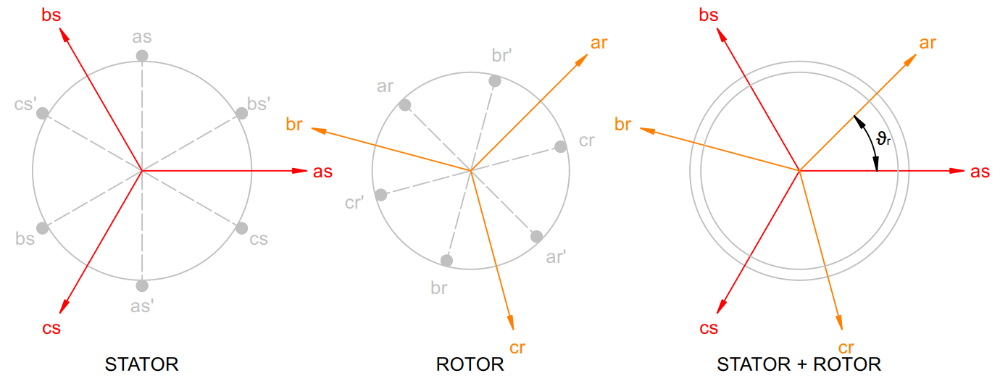
De gekleurde pijlen duiden de magnetische assen (centerlijnen) van de stator- en rotorfasespoelen aan. Wanneer de rotor draait, draaien de magnetische assen van de rotorspoelen t.o.v. de vaste statorspoelen. De positie van de rotor op een tijdstip t wordt eenduidig bepaald door de hoek ϑr tussen de vaste magnetische as van statorspoel asas' en de roterende magnetische as van de rotorspoel arar'.
In het dynamisch model van de inductiemotor wordt voor elk van de drie fasespoelen van de stator en voor elk van de drie fasespoelen van de rotor de relatie vastgelegd tussen de fasespanning, de fasestroom en de aan de fasespoel gekoppelde magnetische flux. Dit zijn de magnetische veldlijnen die als het ware door de spoelkern stromen en in de spoelwindingen spanningen induceren.
Gekoppelde flux wordt gerelateerd aan de stroom die haar veroorzaakt via een inductiecoëfficiënt. De magnetische flux die zich koppelt met een zekere fasespoel is afkomstig van zes stromen: drie statorfasestromen en drie rotorfasestromen. Als dusdanig kunnen per fase ook zes inductiecoëfficiënten worden onderscheiden. In matrixvorm wordt dit bondig als volgt genoteerd voor de stator:
De subscripten a, b en c refereren aan de drie fasen van de driefasige machine. Het subscript s refereert aan de stator en het subscript r refereert aan de rotor.
De matrix [λabc,s] (de gekoppelde flux aan elk van de drie statorfasen), de matrix [iabc,s] (de drie statorfasestromen) en de matrix [i'abc,r] (de drie rotorfasestromen) zijn 3x1-matrices (of kolomvectoren bestaande uit drie elementen).
De matrices [Ls] en [L'sr] zijn 3x3-matrices. De matrix [Ls] bevat de inductiecoëfficiënten die de drie statorstromen koppelen aan de resp. flux die zij veroorzaken in elke statorspoel. De matrix [L'sr] bevat de inductiecoëfficiënten die de drie rotorstromen koppelen aan de resp. flux die zij veroorzaken in elke statorspoel. Het accent-teken duidt aan dat de rotorfasegrootheden op de stator zijn betrokken.
Op analoge wijze geldt voor de gekoppelde fluxen van de rotor (betrokken op de stator):
Het superscript T duidt de "getransponeerde matrix" aan; dus de matrix [L'sr] waarvan de kolommen en rijen zijn omgewisseld.
Vermits de rotor draait t.o.v. de stilstaande stator is het aandeel van de rotorstromen in de gekoppelde flux van de statorfasespoelen afhankelijk van de hoekpositie ϑr van de rotor t.o.v. de stator. Dit impliceert dat de inductiecoëfficiënten in de matrix [L'sr] veranderlijk zijn in de tijd.
Voor de spanning tussen de uiteinden van een spoel geldt algemeen de relatie:
R is de ohmse weerstand van de spoeldraad. i is de stroom die door de spoel vloeit en dλ/dt is het tempo waaraan de gekoppelde flux doorheen de spoel in de tijd varieert. Overeenkomstig de wet van Faraday induceert een veranderlijk magnetisch veld een elektromotorische kracht (e.m.k.) of spanning in de spoelwindingen.
Voor de drie statorfasespoelen samen kan dit bondig worden genoteerd als:
en voor de drie rotorfasespoelen wordt dit:
De spannings- en fluxvergelijkingen van de cilindrische stator en rotor zijn hier volledig uitgeschreven. Voor de ontwikkeling van deze vergelijkingen kan bv. verwezen worden aan Krause, P., Wasynczuk, O., Sudhoff, S., & Pekarek, S. (2013). Analysis of Electric Machinery and Drive Systems. Hoboken: John Wiley & Sons.
De zes vergelijkingen van de gekoppelde fluxen kunnen in de zes vergelijkingen van de fasespanningen worden gesubstitueerd. Men bekomt dan finaal een stelsel van zes differentiaalvergelijkingen, waarin tijdsvariabele inductiecoëfficiënten voorkomen. Dit maakt dat het oplossen van dit stelsel niet voor de hand ligt. Het probleem kan echter aanzienlijk worden vereenvoudigd als men gebruik maakt van de (d,q)-transformatie.
Een symmetrische, gebalanceerde driefasige grootheid, zoals spanning, stroom of gekoppelde flux, kan men in een vlak van de ruimte voorstellen door drie vectoren die 120° t.o.v. elkaar verdraaid zijn (zie figuur hieronder: drie vectoren langs de assen as, bs en cs). De richting van deze vectoren is vast, maar hun grootte en zin varieert voortdurend volgens een cosinusfunctie in de tijd. Telt men op elk willekeurig tijdstip t de drie vectoren vectorieel op, dan bekomt men een vector (de vector rabc) waarvan de grootte (lengte) op elk tijdstip t constant blijft en die roteert met een hoeksnelheid ω die overeenstemt met de pulsatiefrequentie van de cosinusfuncties. Onderstaande animatie illustreert de pulserende fasevectoren xa, xb en xc (rode, groene en blauwe pijl) en de roterende resulterende vector rabc (paarse pijl).
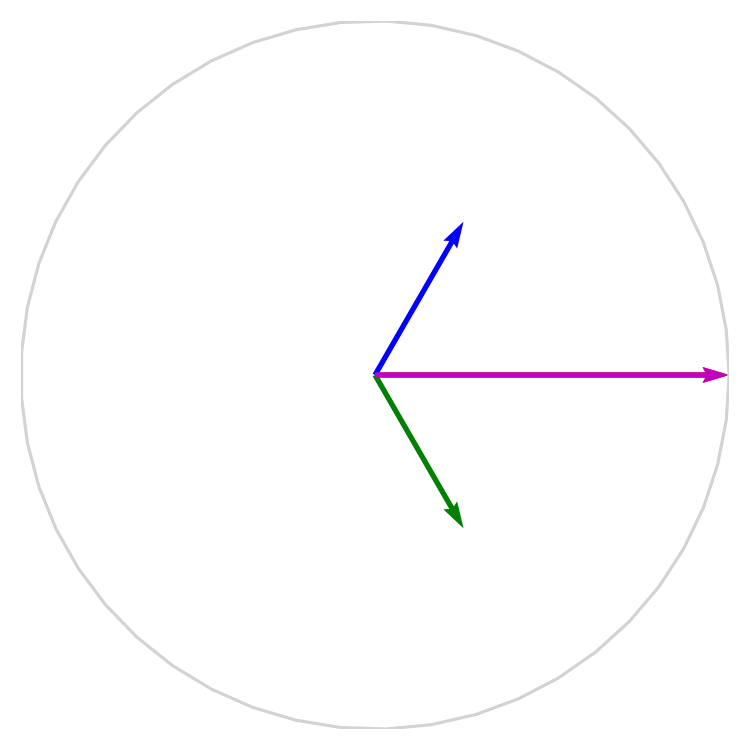
Het moet opgemerkt worden dat de lengte van de resulterende vector rabc met een factor 2/3 is te vermenigvuldigen, opdat deze lengte zou overeenstemmen met de amplitude van de pulserende vectoren. Wiskundig wordt de vector rabc dan beschreven door de uitdrukking:
waarin
en x_a, x_b en x_c de ogenblikkelijke, scalaire waarden zijn van de driefasige grootheid x_{abc} op een tijdstip t. De complexe a-operator "vectorizeert" en roteert een reële waarde x_b gelegen op de reële as van het complexe vlak over een hoek van 120° (de groene vector in de animatie). Het kwadraat van de a-operator stemt dan overeen met een rotatie over een hoek van 240° (de blauwe vector xc in de animatie).
De vector rabc kan men op elk ogenblik t ontbinden in twee orthogonale componenten rd en rq in een (d,q)-assenstelsel.
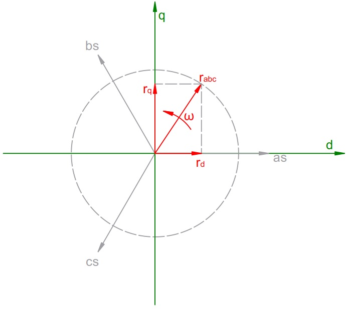
De d-as valt samen met de magnetische as van de as-statorfasespoel. De q-as staat loodrecht op de d-as, zodat een rechtsdraaiend assenstelsel wordt bekomen. De link kan worden gemaakt met het complexe vlak: de d-as is de reële as van het complexe vlak en de q-as is de imaginaire as van het complexe vlak. Zodoende kan men de vector rabc evenzeer noteren als een complex getal: $$ {r_{abc}} = {r_d} + j \cdot {r_q} $$
Op grond van de bovenstaande beschouwingen kan besloten worden dat een driefasige grootheid kan herleid worden tot een tweefasige grootheid (vector) of een complex getal. Dit is wat de dq-transformatie doet.
Men kan nu nog een stap verder gaan door de roterende vector rabc ook te gaan bekijken vanuit andere (d,q)-referentiestelsels die roteren om het vast of stationair (d,q)-referentiestelsel dat hierboven is afgebeeld.
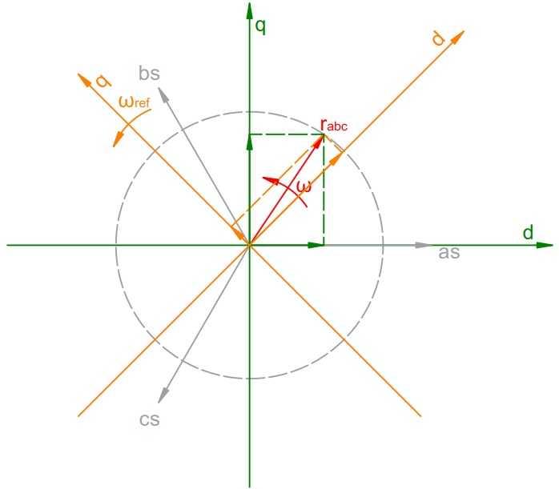
In de analyse van wisselstroommotoren onderscheidt men, naast het vast of stationair (d,q)-referentiestelsel of het (d,q)-referentiestelsel van de stator, verder nog:
Noteer dat de elektrische rotorhoekfrequentie ωr kan worden afgeleid uit de mechanische hoeksnelheid ωmvan de rotor. Zo geldt namelijk dat:
met p het aantal polen van de inductiemotor.
Verdere uitleg over de methode waarmee de (d,q)-transformatie wordt uitgevoerd, kan men hier terugvinden.
D.m.v. de dq-transformatie is het nu mogelijk om de driefasige spannings- en fluxvergelijkingen van de inductiemotor sterk te gaan vereenvoudigen. Hoe dit precies verloopt, wordt hier gedemonstreerd. Hieronder worden enkel maar de resultaten van deze dq-transformatie voorgesteld.
Noteer dat in het geval van een kooiankermotor het rotorcircuit is kortgesloten, zodat de d- en q-component van de rotorspanning nul zijn.
Vergelijking van het elektromechanisch vermogen en het elektromechanisch (of inwendig) koppel:
De machinevariabelen van de inductiemotor (de weerstanden en de inductanties of inductiecoëfficiënten), kunnen d.m.v. praktische proeven worden bepaald (cf. nullast- en kortsluitproef).
Met elektromechanisch vermogen wordt het elektrisch vermogen bedoeld dat in mechanisch vermogen wordt omgezet en zonder de aftrek van de inwendige mechanische verliezen in de motor.
De hierboven weergegeven vergelijkingen beschrijven volledig het dynamisch gedrag van de inductiemotor in het gekozen (d,q)-referentiestelsel.
Laat ons eens nagaan hoe de opgenomen driefasige statorstroom, het elektromechanisch of inwendig koppel en het motortoerental in de tijd zullen verlopen, wanneer een inductiemotor rechtstreeks wordt aangesloten op een star elektrisch net (d.i. de directe aanzet van de inductiemotor). Vóór het moment van inschakelen zijn alle stator- en rotorgrootheden nog nul. Op het tijdstip t = 0 verschijnt de aangelegde driefasige netspanning over de statorfasespoelen. Deze driefasige spanning kan getransformeerd worden naar het vast (d,q)-referentiestelsel van de stator. Voor het vast (d,q)-referentiestelsel van de stator geldt dat de referentiehoeksnelheid ω nul is. Uit de spanningsvergelijkingen cf. par. 3.1 kan men de d- en q-componenten van de gekoppelde fluxen berekenen (differentiaalvergelijkingen van de 1ste orde in de onbekende λ). Met de d- en q-componenten van de gekoppelde fluxen bepaald, bekomen we dan cf. par. 3.2 een stelsel van 4 fluxvergelijkingen in de 4 onbekende d- en q-componenten van stator- en rotorstroom. Dit stelsel kan bijvoorbeeld m.b.v. Gauss-eliminatie worden opgelost. Vervolgens kan dan het elektromechanisch of inwendig koppel berekend worden. Daarmee kan ten slotte op elk tijdstip t het motortoerental berekend worden, mits het massatraagheidsmoment van motor en belasting, alsook het belastingskoppel gekend zijn. De bekomen resultaten op een tijdstip t worden dan in een volgende berekeningslus toegepast om opnieuw de stromen, het koppel en het motortoerental op het volgende tijdstip te berekenen. Zo schrijdt men vooruit in de tijd. De berekende dq-statorstromen kunnen tot slot m.b.v. de inverse (d,q)-transformatie vanuit het stationair (d,q)-referentiestelsel worden getransformeerd tot de werkelijke driefasige statorstromen die door de statorfasespoelen vloeien tijdens het aanlopen van de motor vanuit stilstand.
De vergelijkingen van het dq-model van de inductiemotor en de routines om de dq-transformaties uit te voeren kunnen in een computerprogramma worden geïmplementeerd. Het computerprogramma berekent numeriek het tijdsverloop van de aanloopstroom, het aanzetkoppel en het motortoerental op basis van een vaste tijdstap of -sprong dt. De grafieken hieronder zijn berekend met een eigen computerprogramma dat werd geschreven in de programmeertaal Python.
Kenmerken van de gesimuleerde inductiemotor
| motorparameter | waarde | eenheid |
|---|---|---|
| nominale fasespanning | 127 | V |
| nominale fasestroom | 12,8 | A |
| nominale frequentie (netfrequentie) | 60 | Hz |
| nominaal motortoerental | 1750 | t/min |
| nominaal mechanisch vermogen | 3728,499 | W |
| aantal polen | 4 | - |
| statorfaseweerstand | 0,295 | Ω |
| rotorfaseweerstand (betrokken op de stator) | 0,379 | Ω |
| magnetisatie-reactantie (bij nominale frequentie) | 14,828 | Ω |
| statorlekveld-reactantie (bij nominale frequentie) | 0,676 | Ω |
| rotorlekveld-reactantie (bij nominale frequentie en betrokken op de stator) | 0,676 | Ω |
| massatraagheidsmoment | 0,02 | kg.m² |
De inductiemotor wordt onbelast en rechtstreeks ingeschakeld op een star driefasig net met nominale lijnspanning 220 V en netfrequentie 60 Hz.
Aanloopstroom in de loop van de tijd
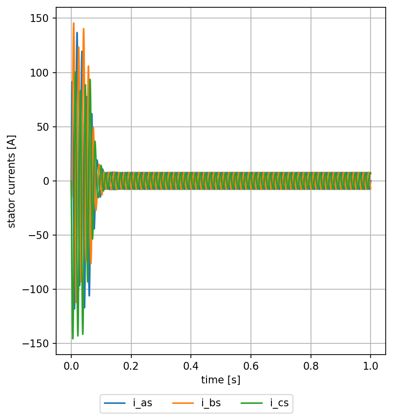
Elektromechanisch koppel in de loop van de tijd
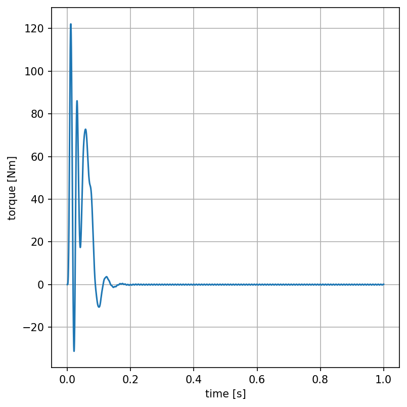
Motortoerental in de loop van de tijd
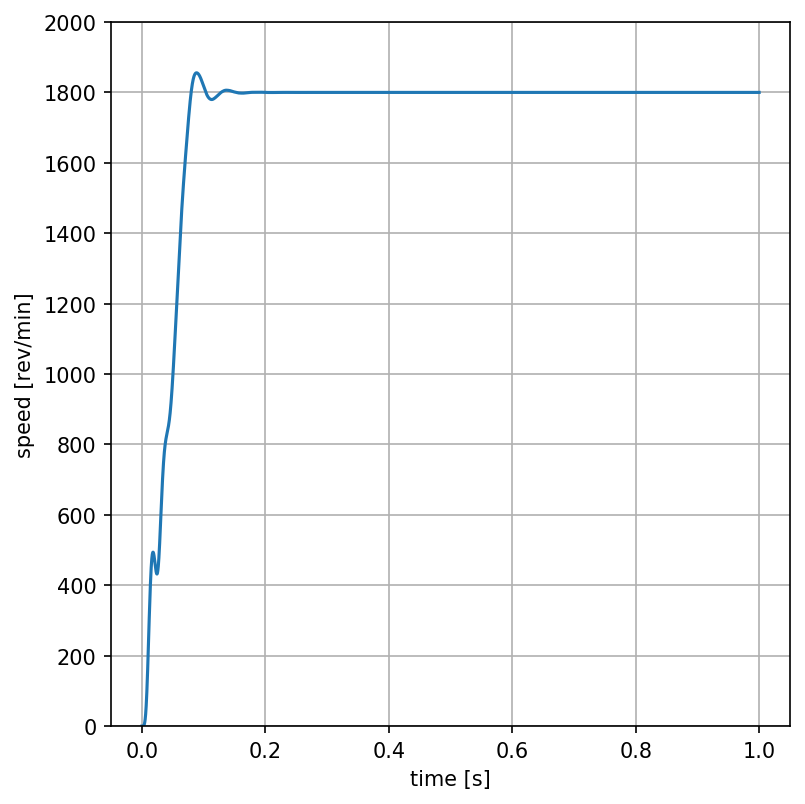
Noteer dat de motor aanloopt tot het synchroon toerental (1.800 t/min voor een 4-polige motor aangesloten op een 60 Hz net). Dit komt omdat er geen rekening is gehouden met de mechanische vermogensverliezen in het dynamisch computermodel van de inductiemotor.
Dynamische koppel-toerentalcurve
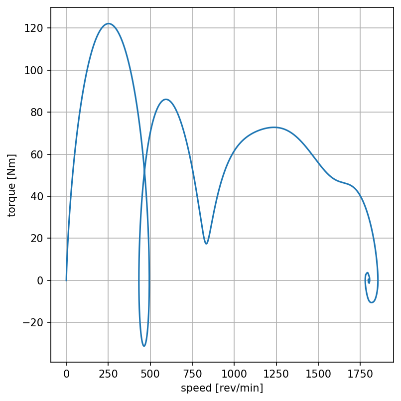
Hierna wordt het werkingsprincipe besproken van de directe vectorregeling dat gebaseerd is op de rotorflux. De rotor roteert met een mechanische hoeksnelheid ωm. Afhankelijk van het aantal polen p van de inductiemotor leidt dit tot een elektrische hoekfrequentie ωr = (p/2)ωm van de spanningen en stromen die in het rotorcircuit worden geïnduceerd door het resulterend magnetisch draaiveld in de luchtspleet van de inductiemotor.
Het rotordraaiveld roteert met dezelfde mechanische hoeksnelheid ωs als het statordraaiveld. De hoeksnelheid ωs wordt de synchrone hoeksnelheid genoemd. De mechanische, synchrone hoeksnelheid ωs volgt uit de elektrische hoekfrequentie ωe (2πfe) van de aangelegde wisselspanning aan de statorklemmen van de inductiemotor:
De essentie van de vectorregeling, ook wel veldgeoriënteerde regeling genoemd, schuilt in de keuze van het (d,q)-referentiestelsel waarin de vectorregelaar de bedrijfsvariabelen van de inductiemotor waarneemt en regelt. In de vectorregeling gebaseerd op de rotorflux wordt het (d,q)-referentiestelsel zo gekozen dat de d-as samenvalt met de fluxvector van het rotordraaiveld. Zoals hierboven reeds werd aangehaald, kan elke inductiemotor, ongeacht zijn aantal machinepolen, in principe worden geanalyseerd als een tweepolige machine met 3 statorfasespoelen en 3 rotorfasespoelen. Het aantal polen waarmee de inductiemotor is uitgevoerd, speelt enkel een rol wanneer de conversie wordt gemaakt tussen mechanische en elektrische hoeksnelheid of vice-versa. De rotorfluxvector is de vector die de zuidpool met de noordpool van het rotordraaiveld verbindt (vector gericht vanaf de zuidpool naar de noordpool).
Door het laten samenvallen van de d-as met de rotorfluxvector, zal het (d,q)-referentiestelsel met dezelfde hoeksnelheid moeten roteren als het rotordraaiveld. Dit is dus met de elektrische synchrone hoeksnelheid ωe (2πfe).
De spanningsvergelijking van de d-component van de rotorspanning in een (d,q)-referentiestelsel met elektrisch synchrone hoeksnelheid ωe luidt (cf. par. 3.1):
In het geval van een kortsluitmotor (kooiankermotor) is het rotorcircuit kortgesloten, zodat de rotorspanning nul is. Door de hierboven vermelde keuze van het (d,q)-referentiestelsel, waarbij de d-as dus samenvalt met de rotorfluxvector, volgt dat de q-component van de gekoppelde rotorflux \lambda_{q,r}^e nul is. Aldus volgt er dat:
De fluxvergelijking van de d-component van de rotorflux luidt (cf. par. 3.2):
met {L_r} = \frac{3}{2}{L_{ms}} + {L_{lr}} en {L_m} = \frac{3}{2}{L_{ms}}.
Met de voorgaande betrekking kan de fluxvergelijking nu worden uitgewerkt tot:
Deze 1ste-orde differentiaalvergelijking legt een eenduidig verband vast tussen de d-component van de statorstroom en de rotorflux. Dezelfde vergelijking vindt men ook terug bij de gelijkstroommotor, waarmee het verband wordt uitgedrukt tussen de veldstroom en het stationair magnetisch veld. Bijgevolg, de vectorregelaar ziet in het synchroon (d,q)-referentiestelsel eigenlijk geen a.c.-motor meer, maar een d.c.-motor. De d-component van de statorstroom i_{d,s}^e kan opgevat worden als de veldstroom waarmee de rotorflux (magnetische bekrachtiging van de motor) kan geregeld worden. Wanneer de veldstroom constant blijft, zal het verband tussen het rotorveld en de veldstroom zich, na het uitsterven van het overgangsverschijnsel, herleiden tot:
De koppelvergelijking (cf. par. 3.3) kan men, gebruikmakend van de fluxvergelijkingen van de rotor (cf. par. 3.2), waarmee de rotorstromen uit de koppelvergelijking worden geëlimineerd, ontwikkelen tot:
Door de keuze van het (d,q)-referentiestelsel, waarbij de d-as samenvalt met de rotorfluxvector (en dus \lambda_{q,r}^e = 0), kan dit nog herleid worden tot:
Als de d-component van de statorstroom i_{d,s}^e (de veldstroom cf. supra) op een constante waarde wordt vastgehouden en bijgevolg ook de rotorflux \lambda_{d,r}^e, dan volgt dat het elektromechanisch koppel recht evenredig wordt met de q-component van de statorstroom i_{q,s}^e. Dit zou men ook kunnen uitdrukken als:
Bijgevolg, men stelt vast dat in het synchroon (d,q)-referentiestelsel waarvan de d-as samenvalt met de rotorfluxvector, de koppelvergelijking van de gelijkstroommotor tevoorschijn komt. Met andere woorden, opnieuw ziet de vectorregelaar in het synchroon (d,q)-referentiestelsel geen a.c.-motor meer, maar een d.c.-motor. De q-component van de statorstroom i_{q,s}^e kan worden opgevat als de arbeidsstroom waarmee het motorkoppel kan geregeld worden.
Uit voorgaande paragraaf 5 volgt dat m.b.v. de dq-transformatie de regeling van de inductiemotor nauw kan gaan aanleunen bij de wijze waarop de d.c.-motor wordt geregeld. Daartoe is het evenwel vereist dat de positie van de rotorfluxvector op elk tijdstip t kan gevolgd worden. Dit is de taak van de zgn. "fluxschatter" (flux estimator). De fluxschatter ontvangt de meetsignalen van de driefasige statorspanning en/of -stroom en/of de motorhoeksnelheid. Er bestaan verschillende mogelijkheden om de fluxschatter te implementeren (op basis van, ofwel spanning, ofwel stroom, ofwel een combinatie van de beide). Op basis van deze fysische meetwaarden en het dynamisch motormodel berekent de fluxschatter de rotatiehoek van de rotorfluxvector op elk tijdstip t uit:
met {\lambda _{q,r}^s} de q-component van de rotorflux in het vast (d,q)-referentiestelsel van de stator en {\lambda _{d,r}^s} de q-component van de rotorflux in het vast (d,q)-referentiestelsel van de stator. Evenzo kan de fluxschatter dan ook de rotorflux bepalen in het synchroon (d,q)-referentiestelsel.
Eenmaal de hoekpositie van de rotorflux is bepaald kan m.b.v. de dq-transformatie de gemeten driefasige statorspanning en -stroom worden vertaald naar d- en q-componenten in het synchroon (d,q)-referentiestelsel. De getransformeerde meetwaarden worden dan teruggekoppeld naar de respectievelijke regelaars die de vectorregelaar samenstellen. Men onderscheidt:
de fluxregelaar
de snelheidsregelaar
de q-stroomregelaar
de d-stroomregelaar
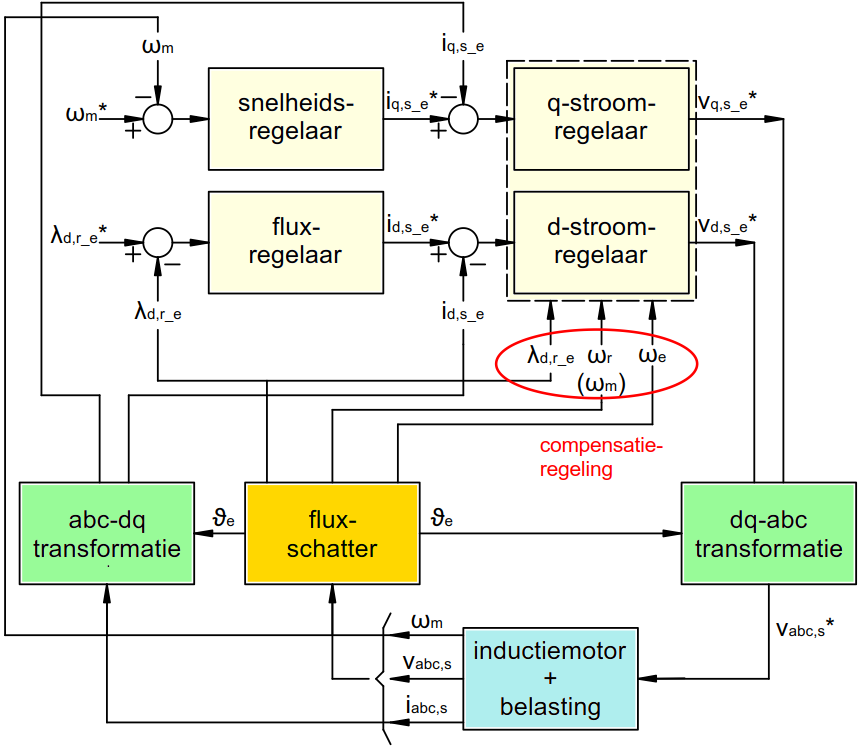
De fluxregelaar ontvangt van buitenaf de wenswaarde (set point) van de rotorflux (\lambda_{d,r}^{e*}). Van de fluxschatter verkrijgt de fluxregelaar de berekende momentane rotorflux (\lambda_{d,r}^{e}). Op basis van het PI-regelalgoritme bepaalt de fluxregelaar de vereiste d-component van de statorstroom (de veldstroom i_{d,s}^{e*}), teneinde de gewenste rotorflux te bereiken of te handhaven.
De snelheidsregelaar ontvangt van buitenaf de wenswaarde (set point) van de motorhoeksnelheid (\omega_m^*). De gemeten motorhoeksnelheid (\omega_m) wordt teruggekoppeld naar de snelheidsregelaar. Op basis van het PI-regelalgoritme bepaalt de snelheidsregelaar de vereiste q-component van de statorstroom (arbeidsstroom i_{q,s}^{e*}). Is de gemeten hoeksnelheid kleiner dan de gewenste hoeksnelheid, dan is er een groter motorkoppel vereist en bijgevolg een grotere arbeidsstroom. In het omgekeerde geval, geldt ook het omgekeerde: het motorkoppel en dus de arbeidsstroom moeten kleiner worden, indien de gemeten hoeksnelheid groter is dan de ingestelde, gevraagde waarde.
De vereiste veldstroom, bepaald door de fluxregelaar, wordt doorgegeven aan de d-stroomregelaar (veldstroomregelaar). De d-stroomregelaar ontvangt tevens de gemeten en reeds getransformeerde d-component van de teruggekoppelde statorstroom (gemeten veldstroom i_{d,s}^e). Op basis van de afwijking tussen vereiste en gemeten waarde, bepaalt de d-stroomregelaar d.m.v. het PI-regelalgoritme de vereiste d-component van de statorspanning (v_{d,s}^{e*}).
De vereiste arbeidsstroom, bepaald door de snelheidsregelaar, wordt doorgegeven aan de q-stroomregelaar (arbeidsstroomregelaar of koppelregelaar). De q-stroomregelaar ontvangt tevens de gemeten en getransformeerde q-component van de teruggekoppelde statorstroom (gemeten arbeidsstroom i_{q,s}^e). Op basis van de afwijking tussen vereiste en gemeten waarde, bepaalt de q-stroomregelaar d.m.v. het PI-regelalgoritme de vereiste q-component van de statorspanning (v_{q,s}^{e*}).
De d- en q-stroomregelaars zijn voorts ook uitgerust met een compensatieregeling waarmee de invloed van de tegen-e.m.k. in de statorfasespoelen wordt gecompenseerd (de regelaars voeren een even groot, maar tegengesteld signaal toe aan hun uitgangssignaal of regelcommando). De statorfasespoelen kunnen daardoor aanzien worden als een zuiver RL-seriecircuit.
D.m.v. inverse dq-transformatie worden de vereiste d- en q-componenten van de statorspanning, bepaald door de d- en q-stroomregelaar in de vectorregelaar, getransformeerd tot een driefasige statorspanning (v_{abc,s}^*) die aan de inductiemotor wordt aangeboden. In de praktijk echter wordt de vereiste driefasige spanning "gemaakt" m.b.v. een PWM-inverter. D.m.v. Pulse Width Modulation (PWM) wordt de vaste netspanning zodanig vervormd dat de benodigde (bij benadering sinusoïdale) driefasige spanning over de statorklemmen van de inductiemotor wordt aangelegd.
De kunst bestaat er vooral in om de verschillende parameters van de regelaars (de versterkingsfactoren van de P- en I-regelaars) optimaal in te stellen in functie van de welbepaalde, specifieke motor én belasting. Hoe deze parameters worden bepaald wordt bijvoorbeeld uitgelegd in Sang-Hoon, K. (2017). Electric Motor Control. Amsterdam: Elsevier.
Ter afsluiting van dit artikel wordt gedemonstreerd hoe de directe vectorregeling gebaseerd op de rotorflux het dynamisch gedrag van de inductiemotor regelt, wanneer deze inductiemotor onbelast vanuit stilstand wordt opgestart. Dit om het dynamisch aanzetgedrag van de inductiemotor met directe vectorregeling eens te vergelijken met de ongeregelde, directe aanzet van de inductiemotor cf. par. 4. Dezelfde inductiemotor als in paragraaf 4 is voor de simulatie aangewend. Het moet hierbij genoteerd worden dat in de simulatie de PWM-inverter niet is geïmplementeerd. De door de vectorregelaar (stroomregelaar) berekende driefasige statorspanning wordt in de computersimulatie dus rechtstreeks aan de inductiemotor toegevoerd.
In de simulatie is het gewenst toerental op de vectorregelaar ingesteld op het nominaal toerental (1.750 t/min). De gewenste rotorflux is ingesteld op diens nominale waarde. De snelheidsregelaar en de fluxregelaar zijn zodanig ingesteld dat de nominale waarden van de q- en d-statorstroom niet overschreden kunnen worden (stroombegrenzing). Evenzo is de stroomregelaar in de simulatie zodanig ingesteld dat de uitgestuurde statorspanning niet groter kan worden dan de nominale statorspanning. Noteer tot slot nog dat in het dynamisch motormodel de inwendige mechanische verliezen niet zijn gemodelleerd.
Statorspanning uitgestuurd door vectorregelaar in de loop van de tijd
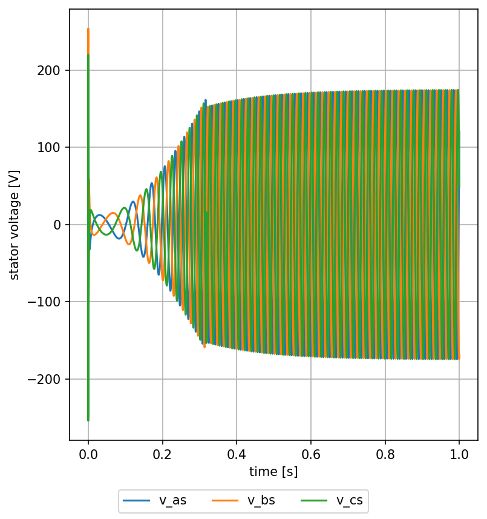
Aanloopstroom van de inductiemotor in de loop van de tijd
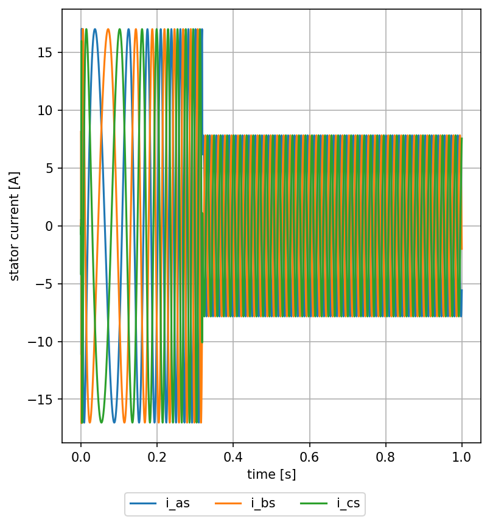
Elektromechanisch koppel in de loop van de tijd
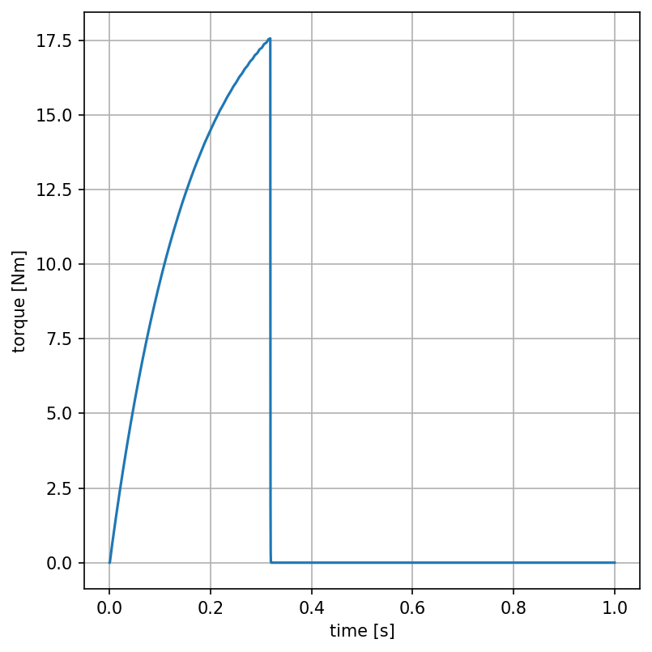
Motortoerental in de loop van de tijd
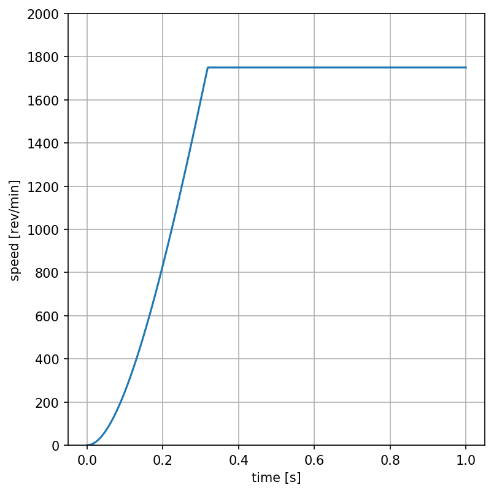
Dynamische koppel-toerencurve
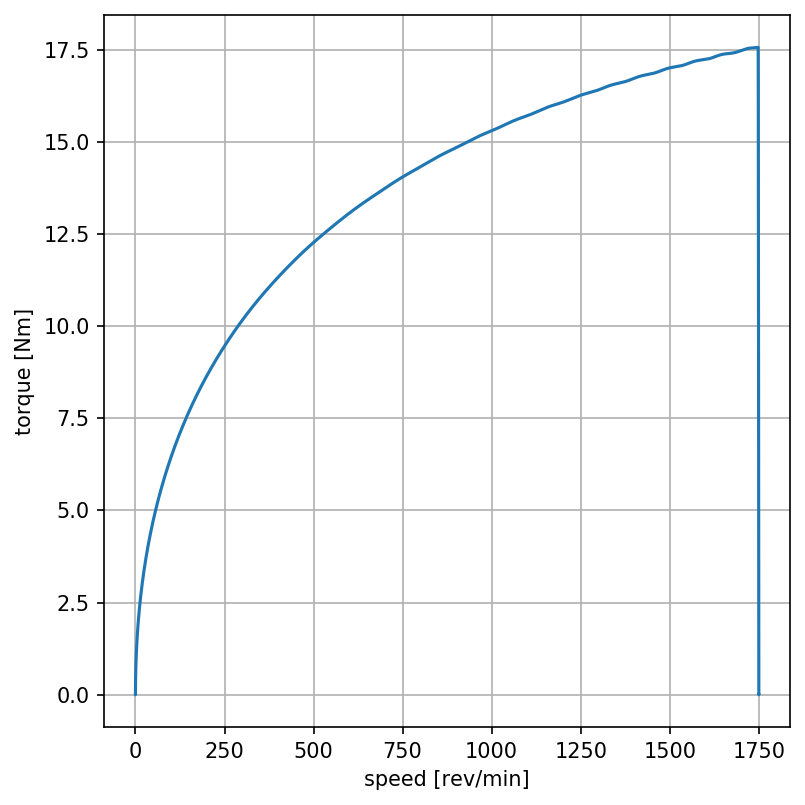
Het verloop van de statorstroom in het synchroon (d,q)-referentiestelsel ziet er als volgt uit:
d-component van de statorstroom (magnetische veldstroom)
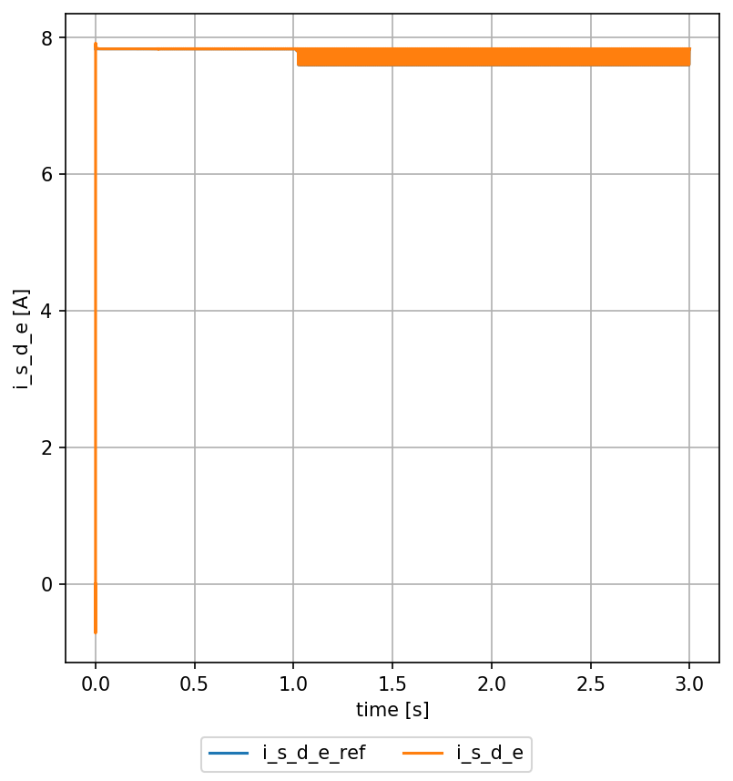
q-component van de statorstroom (arbeidsstroom)
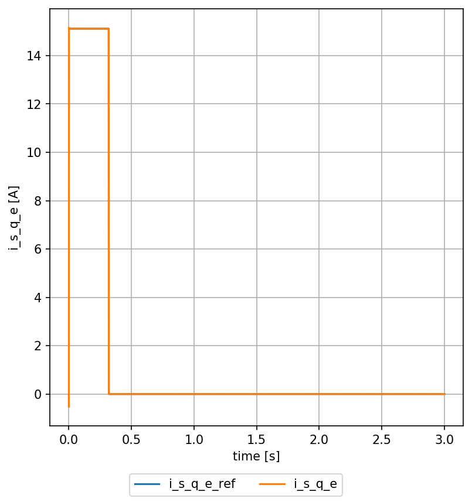
De oranje curve is het verloop van de gemeten stroom (de gewenste waarde is de blauwe curve, maar deze kan men hier niet zien omdat de gemeten waarde de gewenste waarde quasi perfect volgt).